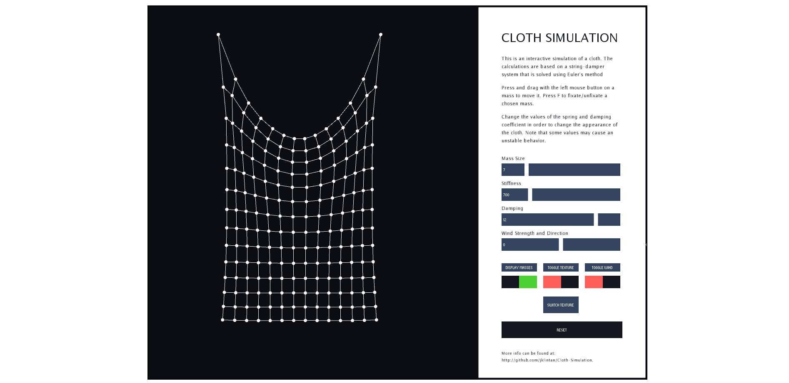
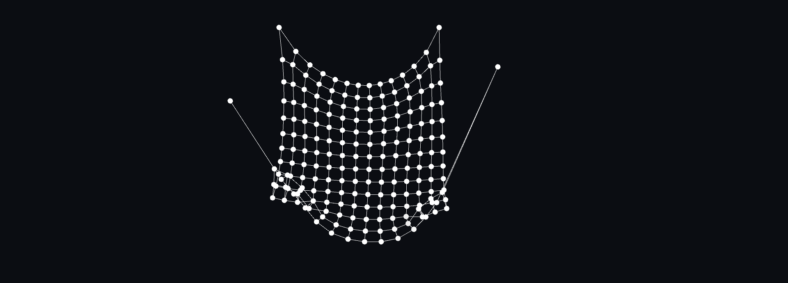
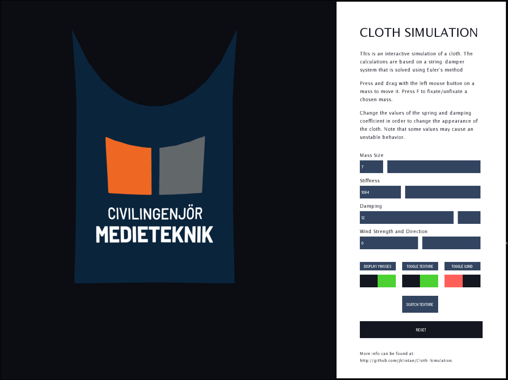
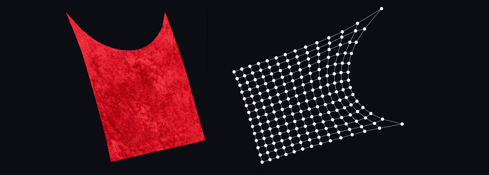

Summary
This project was implemented as part of the course 'Modelling Project (TNM085)' at Linköping University during 6 weeks 2020 by a group of 4 people. The simulation is based on a model of a structural lattice with masses connected using springs and dampers. By formulating the forces acting on each particle, Euler's method and the Verlet method are used to simulate the movement of the cloth in Matlab. The cloth is further implemented in Processing with the use of Java and extended with user interaction, UV-mapping for texturing and Perlin noise for simulating wind acting on the cloth.
The model was first implemented in Matlab, both in a 2D plot and a 3D plot for checking that the physical formulas were correct. The model was then implemented in Processing and built as a stand-alone application. A third simulation was implemented using Javascript in order to create a simple web based tool for demonstration.
Implementation
The mathematical model of the simulation is based on calculation of the motion of each particle in the lattice. In order to do this, Newton's second law of motion is used. The force on each particle will further be the sum of the internal and external forces that act on the particle. The spring force is simulated according to Hooks law and the damping according to the linear damping law. External forces include gravitational force, wind force and air resistance.
The next step performed was to allow the user to interact with the cloth in various ways. A graphical interface was implemented as a way to allow the user to use sliders in order to change the values of the damping and spring constants and observe how the cloth responds to the change. The values that the user can choose from are set within the simulation and offers a quite large range of numbers. This means that the user could end up with a cloth that is experiencing unstable behaviour but the choice to allow this is based on the purpose of understanding the connection between the constants. A reset button is added as a way for the user to always being able to turn the cloth back into a stable behavior.
In the beginning only two masses, the two in the top corners are set as fixed but the user should be able to choose this during runtime. Therefor the mouse position of the user is tracked and when the user presses the mouse button, the algorithm checks for a nearby mass and if the user has pressed on it, it chooses this mass to follow the mouse button as long as the user press down the mouse button and drags. By further pressing down the F-key when having a chosen mass, the user can fixate and unfixate masses. This implementation successfully allows the user to investigate what happens to the cloth if it is only attached in one point, or in multiple.
A way to create a cloth that has a more realistic appearance is to add a texture on top of it. In order to achieve this, it is needed to create a UV-mapping of the lattice. Even though triangles are the most used geometric primitive for generating graphics on a screen, there exist some shapes that can be used for acceleration and simplicity. The approach used in this project is based upon quadrilateral strips, quad-strips, and definitions of vertices on every mass in the lattice.
A function is implemented for drawing the lattice that goes through every vertex in the lattice and displays it on the current position. The usage of quad-strips as shape is defined before the loop and then for every mass in the lattice, the positions of the mass and the corresponding UV-coordinates are used for defining a vertex and its connection to the next vertex in the grid. In this way, a lattice with base of quad-strips is built. Since the UV-coordinates have been defined for each vertex, the built-in function texture can be used for defining which input-image used for the rendering. This texture image will then be mapped upon the defined vertex points that build up the lattice and will correctly deform along with the cloth.
In order to simulate wind, a map is used in order to create a force field. A small offset is added and multiplied with Perlin Noise in order to get a continuous, but still slightly random, appearance of wind interacting with the cloth.
